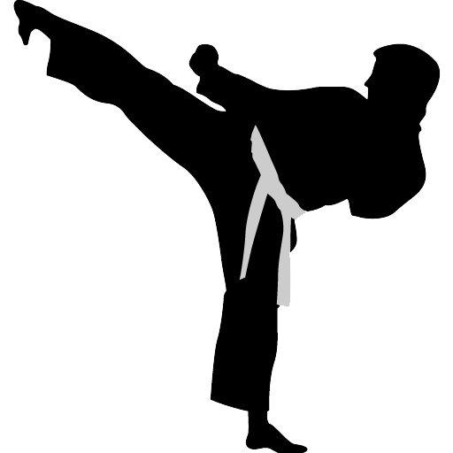

Sepak Bola
Bola Basket
Bola Voli
Pencak Silat
PMR
Pramuka
Paskibra
Paduan Suara
Futsal
Futsal adalah permainan bola yang dimainkan oleh dua tim, yang masing-masing beranggotakan lima orang. Tujuannya adalah memasukkan bola ke gawang lawan, dengan memanipulasi bola dengan kaki. Selain lima pemain utama, setiap regu juga diizinkan memiliki pemain cadangan. Tidak seperti permainan sepak bola dalam ruangan lainnya, lapangan futsal dibatasi garis, bukan net atau papan.
| Ketua Ekskul | Jadwal | Prestasi Tertinggi |
|---|---|---|
| M. Rafli Fauzy | Sabtu, 07.30 - 9.30 WIB | Juara I Futsal Cup tingkat Nasional |
Sepak Bola
Sepak bola (bahasa Inggris: Football atau Soccer) adalah cabang olahraga yang menggunakan bola yang umumnya terbuat dari bahan kulit dan dimainkan oleh dua tim yang masing-masing beranggotakan 11 (sebelas) orang pemain inti dan beberapa pemain cadangan. Memasuki abad ke-21, olahraga ini telah dimainkan oleh lebih dari 250 juta orang di 200 negara, yang menjadikannya olahraga paling populer di dunia. Sepak bola bertujuan untuk mencetak gol sebanyak-banyaknya dengan memasukan bola ke gawang lawan. Sepak bola dimainkan dalam lapangan terbuka yang berbentuk persegi panjang, di atas rumput atau rumput sintetis.
| Ketua Ekskul | Jadwal | Prestasi Tertinggi |
|---|---|---|
| M. Wildan Fathoni | Sabtu, 07.30 - 9.30 WIB | Juara I Lomba Sepak Bola antar sekolah tingkat Kabupaten |
Bola Basket
Bola basket (bahasa Inggris: basketball) adalah olahraga bola berkelompok yang terdiri atas dua tim beranggotakan masing-masing lima orang yang saling bertanding mencetak poin dengan memasukkan bola ke dalam keranjang lawan. Bola basket sangat cocok untuk ditonton karena biasa dimainkan di ruang olahraga tertutup dan hanya memerlukan lapangan yang relatif kecil. Selain itu, permainan bola basket juga lebih kompetitif karena tempo permainan cenderung lebih cepat jika dibandingkan dengan olahraga bola yang lain, seperti voli dan sepak bola.
Ada 3 posisi utama dalam bermain basket, yaitu:
- Forward, pemain yang tugas utamanya adalah mencetak poin dengan memasukkan bola ke keranjang lawan.
- Defense, pemain yang tugas utamanya adalah menjaga pemain lawan agar pemain lawan kesulitan memasukkan bola,
- Playmaker, pemain yang menjadi tokoh kunci permainan dengan mengatur alur bola dan strategi yang dimainkan oleh rekan-rekan setimnya.
| Ketua Ekskul | Jadwal | Prestasi Tertinggi |
|---|---|---|
| Virginia Reska Suci A. | Sabtu, 07.30 - 9.30 WIB | Juara II O2SN Bola Basket tingkat Provinsi |
Bola Voli
Bola voli (bahasa Inggris: volleyball) adalah permainan olahraga yang dimainkan oleh dua grup berlawanan. Masing-masing grup memiliki enam orang pemain. Terdapat pula variasi permainan bola voli pantai yang masing-masing grup hanya memiliki dua orang pemain. Olahraga Bola Voli dinaungi FIVB (Federation Internationale de Volleyball) sebagai induk organisasi internasional, sedangkan di Indonesia, olahraga bola Voli dinaungi oleh PBVSI (Persatuan Bola Voli Seluruh Indonesia).
| Ketua Ekskul | Jadwal | Prestasi Tertinggi |
|---|---|---|
| Stefani | Sabtu, 07.30 - 9.30 WIB | Mengikuti seleksi O2SN tingkat Kabupaten |
Pencak Silat
Pencak silat atau silat adalah suatu seni bela diri tradisional yang berasal dari Kepulauan Nusantara(Indonesia). Seni bela diri ini secara luas dikenal di Indonesia, Malaysia, Brunei, dan Singapura, Filipina selatan, dan Thailand selatan sesuai dengan penyebaran berbagai suku bangsa Nusantara.
| Ketua Ekskul | Jadwal | Prestasi Tertinggi |
|---|---|---|
| Jaenal Muslimin | Sabtu, 07.30 - 9.30 WIB | Juara I Championship Cup Kemenpora tingkat Nasional |
Palang Merah Remaja
Palang Merah Remaja (disingkat PMR) adalah wadah pembinaan dan pengembangan anggota remaja PMI, yang selanjutnya disebut PMR.Terdapat di PMI kota atau kabupaten di seluruh Indonesia, dengan anggota lebih dari 5 juta orang, anggota PMR merupakan salah satu kekuatan PMI dalam melaksanakan kegiatan-kegiatan kemanusiaan dibidang kesehatan dan siaga bencana, mempromosikan prinsip-prinsip dasar gerakan palang merah dan bulan sabit merah internasional, serta mengembangkan kapasitas organisasi PMI.
- Kebijakan PMI dan federasi tentang pembinaan Remaja bahwa:
- Remaja merupakan prioritas pembinaan, baik dalam keanggotaan maupun kegiatan kepalangmerahan.
- Remaja berperan penting dalam pengembangan kegiatan kepalangmerahan.
- Remaja berperan penting dalam perencanaan, pelaksanaan kegiatan dan proses pengambilan keputusan untuk kegiatan PMI.
- Remaja adalah kader relawan
- Remaja calon pemimpin PMI pada masa depan.
Palang Merah Remaja atau PMR adalah suatu organisasi binaan dari Palang Merah Indonesia yang berpusat di sekolah-sekolah ataupun kelompok-kelompok masyarakat (sanggar, kelompok belajar, dll.) yang bertujuan membangun dan mengembangkan karakter Kepalangmerahan agar siap menjadi Relawan PMI pada masa depan.
| Ketua Ekskul | Jadwal | Prestasi Tertinggi |
|---|---|---|
| Aditia Permatasari | Sabtu, 07.30 - 9.30 WIB | Mengikuti Pelatihan PMI antar sekolah tingkat Kabupaten |
Pramuka
Kepramukaan adalah proses pendidikan di luar lingkungan sekolah dan di luar lingkungan keluarga dalam bentuk kegiatan menarik, menyenangkan, sehat, teratur, terarah, praktis yang dilakukan di alam terbuka dengan Prinsip Dasar Kepramukaan dan Metode Kepramukaan, yang sasaran akhirnya pembentukan watak, akhlak, dan budi pekerti luhur. Kepramukaan adalah sistem pendidikan kepanduan yang disesuaikan dengan keadaan, kepentingan, dan perkembangan masyarakat, dan bangsa Indonesia.
| Ketua Ekskul | Jadwal | Prestasi Tertinggi |
|---|---|---|
| Hairul Anwar | Sabtu, 07.30 - 9.30 WIB | Juara I Lomba Kepramukaan tingkat Kabupaten |
Pasukan Kibaran Bendera Pusaka
Paskibraka adalah singkatan dari Pasukan Pengibar Bendera Pusaka dengan tugas utamanya mengibarkan duplikat bendera pusaka dalam upacara peringatan proklamasi kemerdekaan Indonesia di 3 tempat, yakni tingkat Kabupaten/Kota (Kantor Bupati/Wali Kota), Provinsi (Kantor Gubernur), dan Nasional (Istana Merdeka). Anggotanya berasal dari pelajar SMA Sederajat kelas 1 atau 2. Penyeleksian anggotanya biasanya dilakukan sekitar bulan April untuk persiapan pengibaran pada 17 Agustus.
Selama waktu seleksi sampai 16 Agustus, seorang anggota calon Paskibraka dinamakan "CAPASKA" atau Calon Paskibraka. Pada waktu penugasan 17 Agustus, anggota dinamakan "PASKIBRAKA", dan setelah 17 Agustus, dinamakan "PURNA PASKIBRAKA".
- Tingkatan Paskibraka ada tiga yaitu:
- Paskibraka Nasional - bertugas di Istana Merdeka
- Paskibraka Propinsi - bertugas di Pusat pemerintahan gubernur propinsi
- Paskibraka Kota - bertugas di Pusat pemerintahan wali kota/kabupaten
| Ketua Ekskul | Jadwal | Prestasi Tertinggi |
|---|---|---|
| Mega Kumala Sari | Sabtu, 07.30 - 9.30 WIB | Masuk Daftar Pasukan Pengibaran Bendera Pusaka Nasional 17 Agustus |
Paduan Suara
Paduan suara atau kor (dari bahasa Belanda, koor) merupakan istilah yang merujuk kepada ensembel musik yang terdiri atas penyanyi-penyanyi maupun musik yang dibawakan oleh ensembel tersebut. Umumnya suatu kelompok paduan suara membawakan musik paduan suara yang terdiri atas beberapa bagian suara (bahasa Inggris: part, bahasa Jerman: Stimme).
Dalam pengertian ini, paduan suara juga mencakup kelompok vokal (vocal group), walaupun kadang kedua istilah ini saling dibedakan.
| Ketua Ekskul | Jadwal | Prestasi Tertinggi |
|---|---|---|
| Syafira | Sabtu, 07.30 - 9.30 WIB | Menjadi Tim Paduan Suara upacara bendera di sekolah |
Informasi Identitas Diri
Abdul Jabbar Hafizh
Umum
- Nama Abdul Jabbar Hafizh
- Usia 19 Tahun
- TTL Jakarta, 12 Agustus 2000
- Alamat Perumahan Griya Bunga Asri blok A No. 5 RT.03 RW.08, Gunung Sindur, Bogor, Jawa Barat.
Jenjang Pendidikan
- TK TK Islam Al-Fath
- SD SDN 02 Gunung Sindur
- SMP SMPN 1 Parung
- SMA SMAN 1 Parung
- Institusi Universitas Islam Negeri Syarif Hidayatullah Jakarta
- Fakultas Sains dan Teknologi
- Jurusan Teknik Informatika
- Angkatan 2018
Prestasi saat Sekolah
- Juara II Lomba Da'i di SMA
- Juara II Olimpiade Olahraga Siswa Nasional cabang olahraga Pencak Silat
- Mengikuti Kompetisi Pencak Silat tingkat Internasional
Skills
- C 90%
- Java Basic
- HTML, CSS 90%
- Javascript Basic
- PHP 70%
Pengalaman
- Magang 3 bulan FrontEnd Developer di Loopinc.id